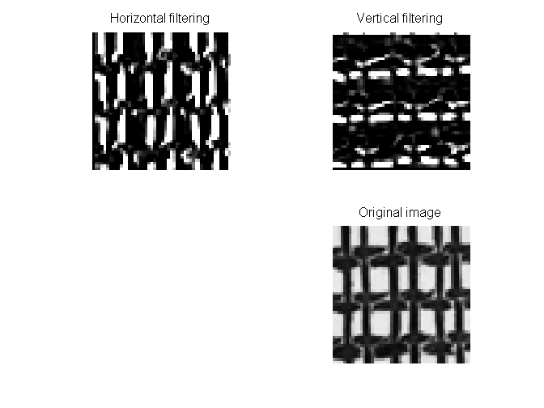
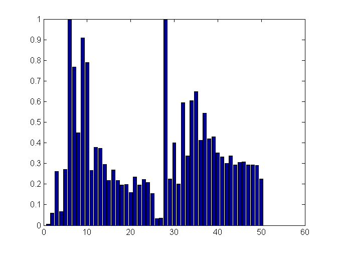

car2(): Feautures extraction function
This function creates a set of ideal filters and applies them to the input images, after that, the energy is calculated for each resulting filtered image .The output is a features vector with the same size as the rings number
function features=car2(ima)
Randomly select a pixel within the image range and create a new sumimage cort
l=randi(500); r=randi(300); cort=ima((l:l+99),(r:r+99)); [b c]=spect1(cort); % Calls the spect1() function [x,y]=size(b); n=50; % Rings number if x>=y h=x/n; end
Calculate energy in horizontal spectrum rings
Eh=[]; for i=1:n/2 f=0; g=lpfilter('ideal',x,y,h*i); g2=1-lpfilter('ideal',x,y,h*(i-1)); fi=b.*g.*g2; d=uint8(ifft2(fi)); e=sum(d(:)); Eh(i)=e; end
Calculate energy in vertical spectrum rings
Ev=[]; for i=1:n/2 g=lpfilter('ideal',x,y,h*i); g2=1-lpfilter('ideal',x,y,h*(i-1)); fi=c.*g.*g2; d=uint8(ifft2(fi)); e=sum(d(:)); Ev(i)=e; end Eh=Eh/max(Eh); Ev=Ev/max(Ev);
Features vector and output of the function
features(1:25)=Eh; features(26:50)=Ev; figure,bar(features)